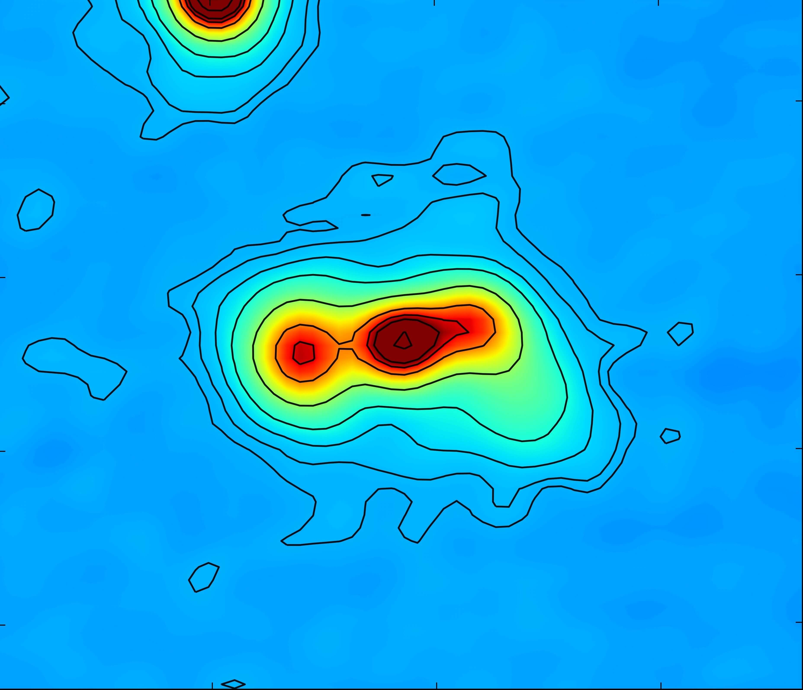
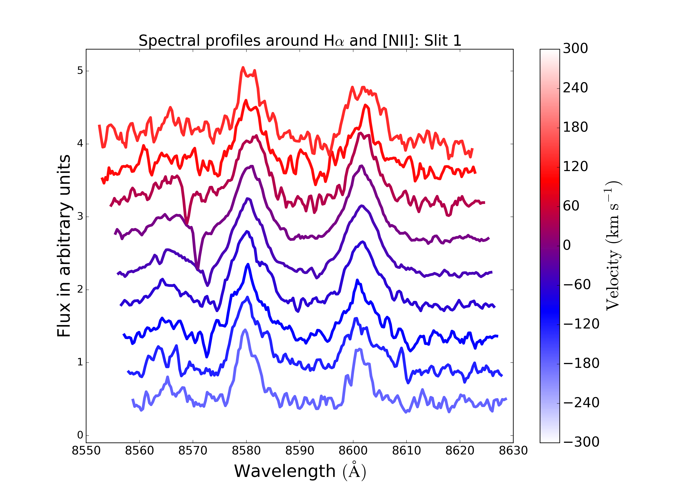
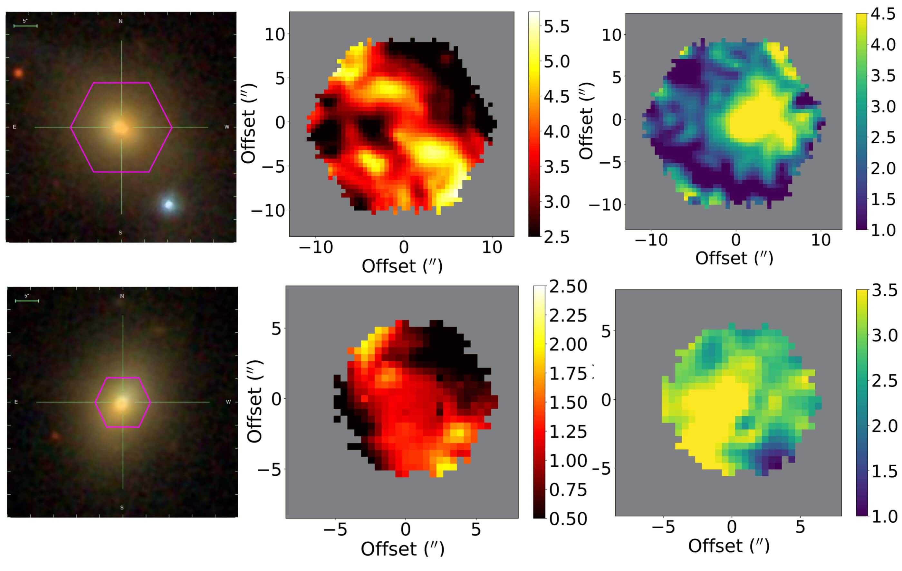

— Subrahmanyan Chandrasekhar
I present Gemini/GNIRS observations of nine cold-gas-rich, star-forming radio galaxies, revealing shock-heated molecular gas from mergers and jet–ISM interactions during a rare transitional AGN feedback phase.
I use JWST/NIRSpec IFU observations to disentangle AGN photoionization and shock excitation in the [Fe II] outflows of a red quasar at z = 0.4.

I use ALMA to detect molecular gas in 10 isolated dwarf galaxy pairs from the TiNy Titans sample, revealing CO(1–0) emission in 7 galaxies and linking cold gas content to star formation in low-mass systems.

I revisit V488 Per—the dustiest known main sequence star—and find no mid-infrared emission features and no evidence for stellar or sub-stellar companions, suggesting an unusual dust composition and system architecture.

I see signatures of cool neutral gas inflowing and possibly fueling the low-luminosity AGNs in red geysers. I use NaD absorption line to trace the cool and clumpy gas dynamics.
I use cosmological zoom-in and Isolated galaxy simulations to understand various aspects of star formation, stellar feedback, AGN feedback in a wide range of galaxies.